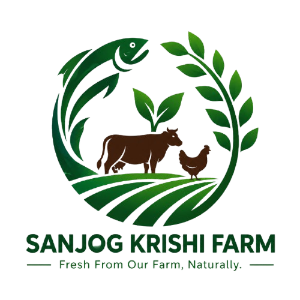
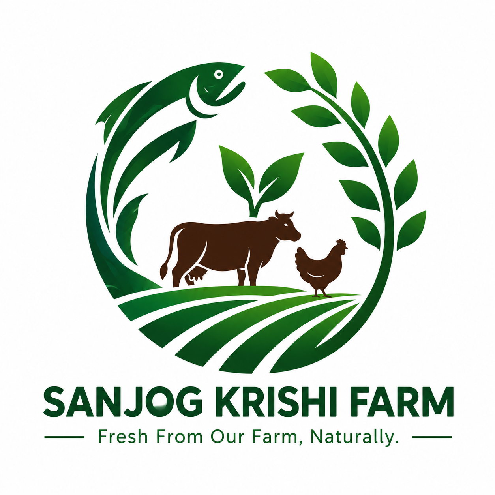

Vegetables
Tomato, cauliflower, cabbage, potato, carrot, spinach, cucumber and broccoli.
Seasonal produce
Sanjog Krishi Farm

Sanjog Krishi FarmFresh produce, responsible farming and everyday life from our farm in Hasandaha, Morang.
SKF brings together crops, fish, livestock and people as part of one living farm.

Seasonal vegetables grown with care.
Fish farming as part of our farm.
Animals, people and everyday work.
Explore some of the produce and farm products that make SKF what it is.
Tomato, cauliflower, cabbage, potato, carrot, spinach, cucumber and broccoli.
Seasonal produce
Strawberry, orange, kiwi, guava, avocado and seasonal fruits.
Fresh from the farm
Organic herbs, dairy and seasonal farm produce.
Made with care
We are building a modern farm around fresh, locally grown products and responsible farming.
From cultivation and fish farming to livestock and seasonal produce, SKF is connected to the everyday work that happens on the farm.
See farm life Growing
Growing
 Farm animals
Farm animals
 Fish farming
Fish farming
 Harvesting
Harvesting
Want to know more about SKF, our fresh produce, farm products, or placing an order?
Sanjog Krishi Farm is a modern agricultural farm dedicated to producing fresh, healthy, and locally grown farm products.
We focus on sustainable farming practices while maintaining the quality and freshness of every product we provide.
Our mission is to connect local farmers and customers through fresh agricultural products while promoting environmentally responsible farming.
Discover Our Farm →Carefully grown seasonal produce for homes, businesses and bulk orders.
Tomato, cauliflower, cabbage, potato, carrot, spinach, cucumber and broccoli.
FRESHLY HARVESTEDStrawberry, orange, kiwi, guava, avocado and delicious seasonal fruits.
SEASONAL SELECTIONorganic herbs, dairy products and seasonal farm produce.
FARM-MADE & FRESHWe believe responsible farming can nourish communities while caring for the land.
Plan a Farm Visit →At Sanjog Krishi Farm, we raise healthy and fresh fish using responsible farming practices.
Fresh and healthy fish raised at our farm.
We maintain suitable water conditions for fish farming.
We focus on responsible and sustainable farming.

Rohu is a popular freshwater fish commonly raised in ponds and fish farms.

Catla is a freshwater fish that grows quickly and is widely cultivated in fish farms.

Our fish pond provides a suitable environment for healthy and sustainable fish farming.
Take a look at our fish farming activities and how we care for our fish.
See how we harvest fish.
Explore our fish farming environment and daily activities.
Simple, reliable ways to enjoy and connect with fresh local agriculture.
Quality produce harvested with freshness in mind.
Convenient farm-to-customer delivery for fresh orders.
Reliable agricultural supply for larger requirements.
Visit our farm and experience local agriculture.
Learn more about responsible and sustainable farming.
Curated seasonal produce packages for your needs.
Environmentally responsible practices.
Products prepared with freshness first.
A closer connection between farm and customer.
Care and consistency in every harvest.
For orders, farm visits, bulk requirements or general enquiries, reach out to us.